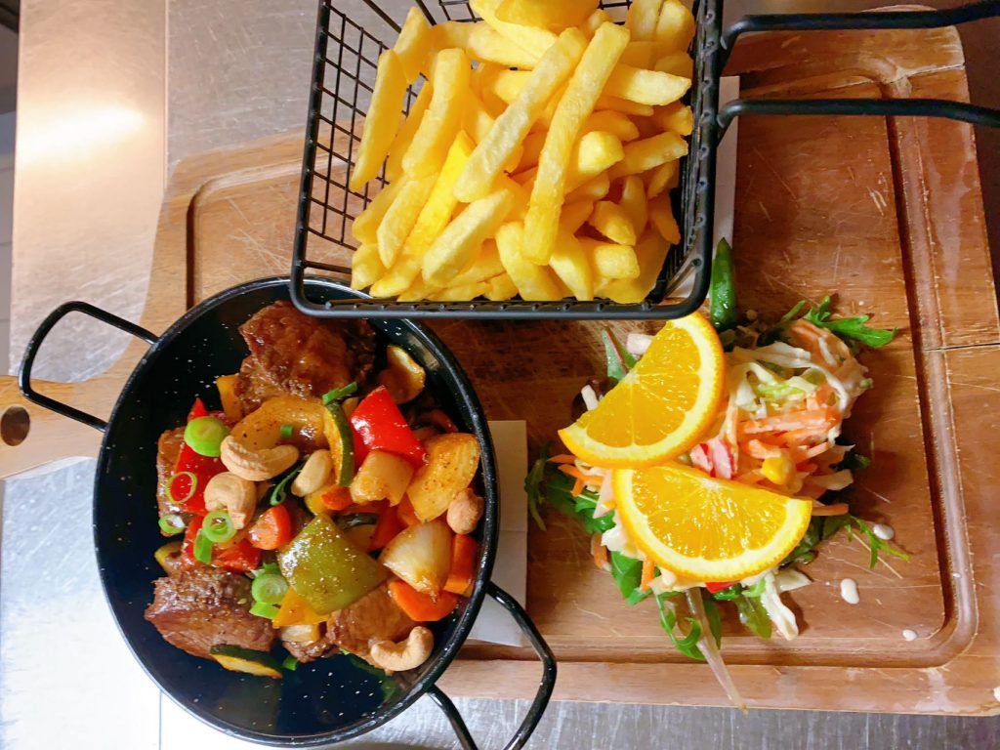
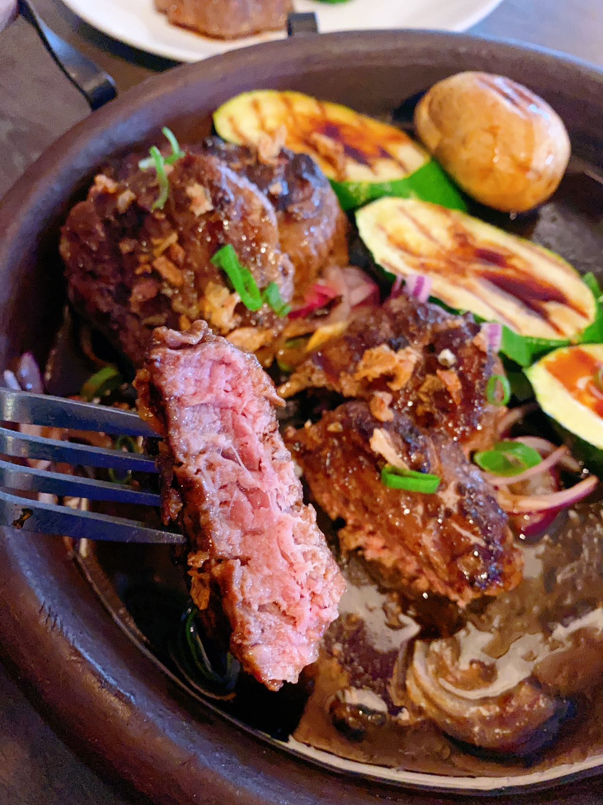
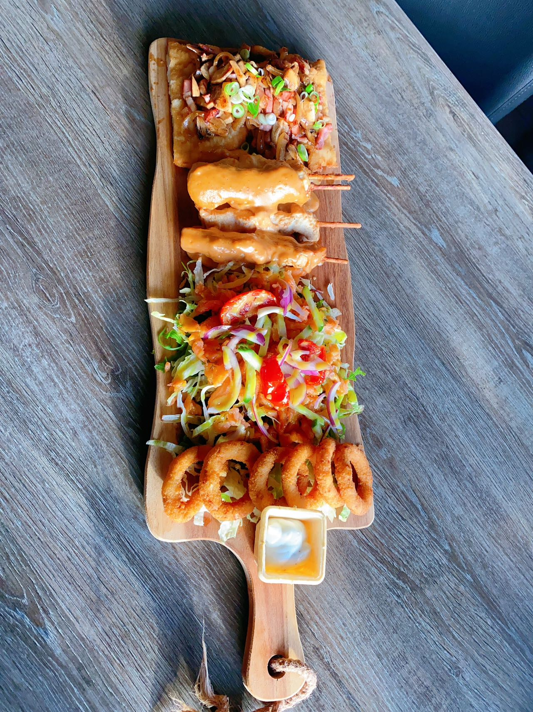
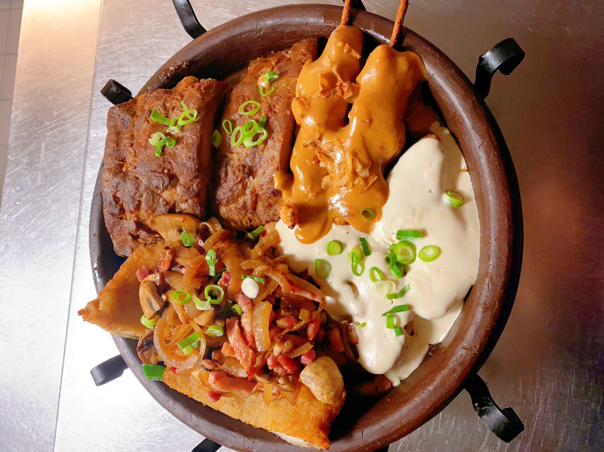
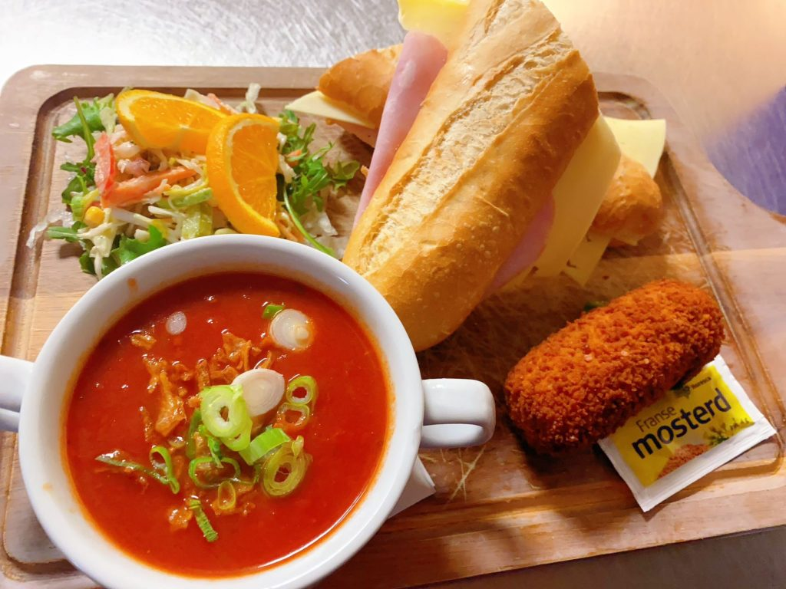
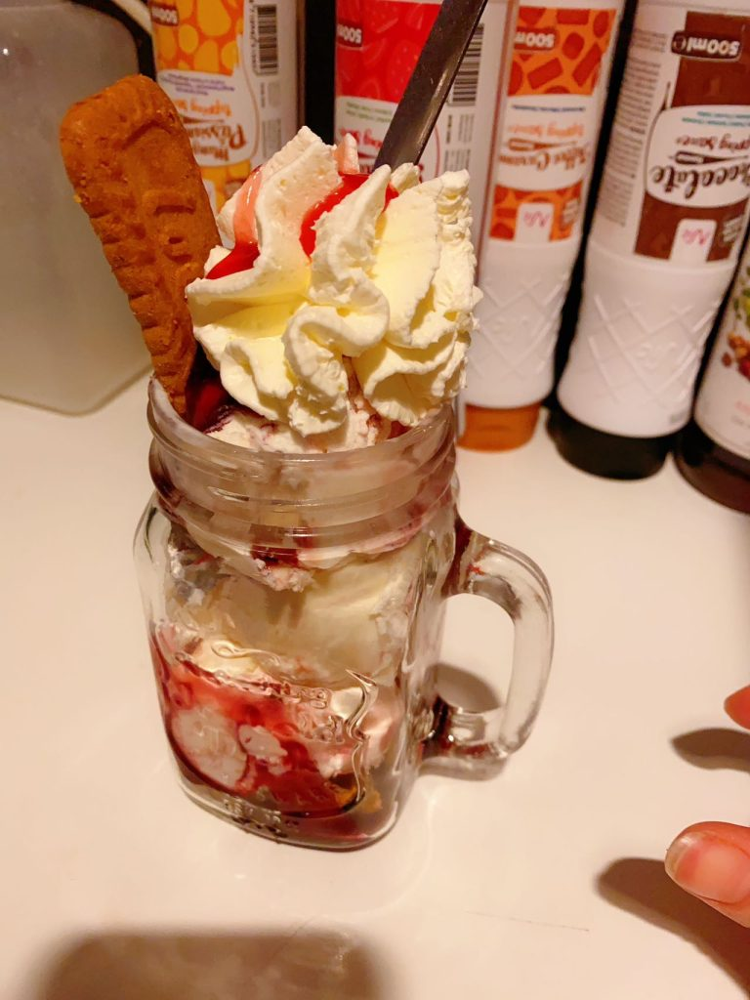
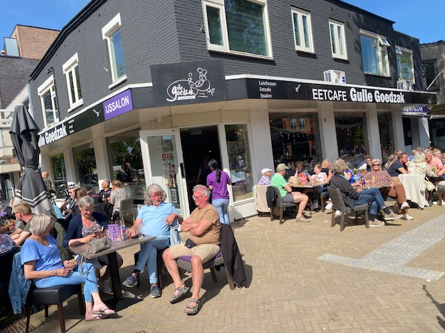
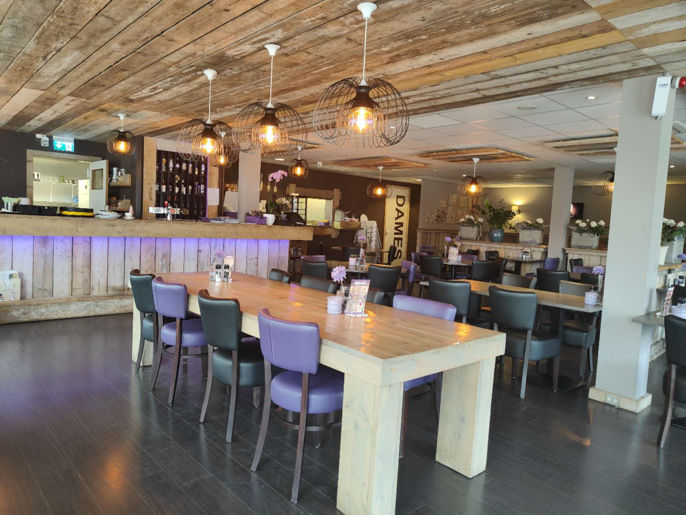
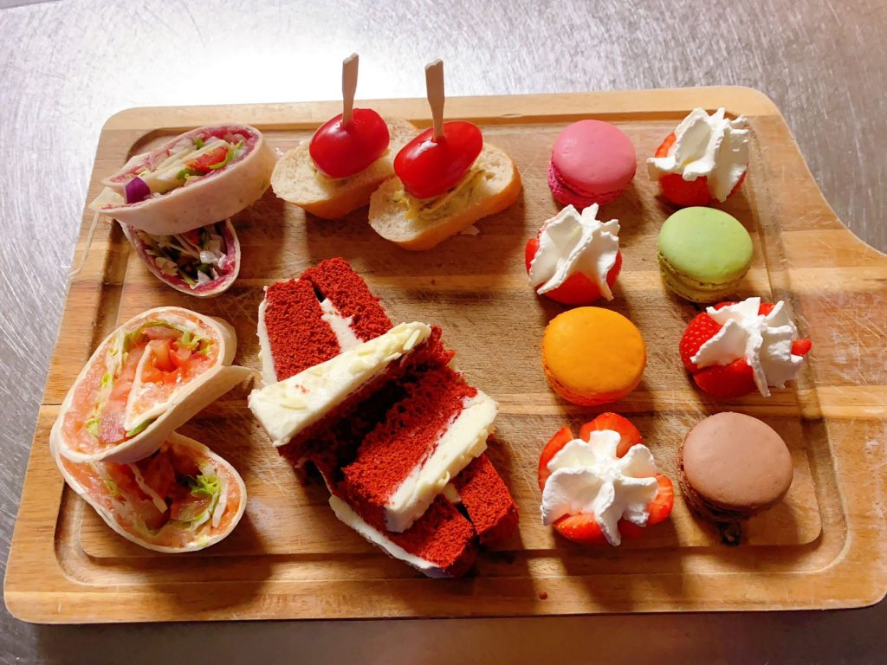
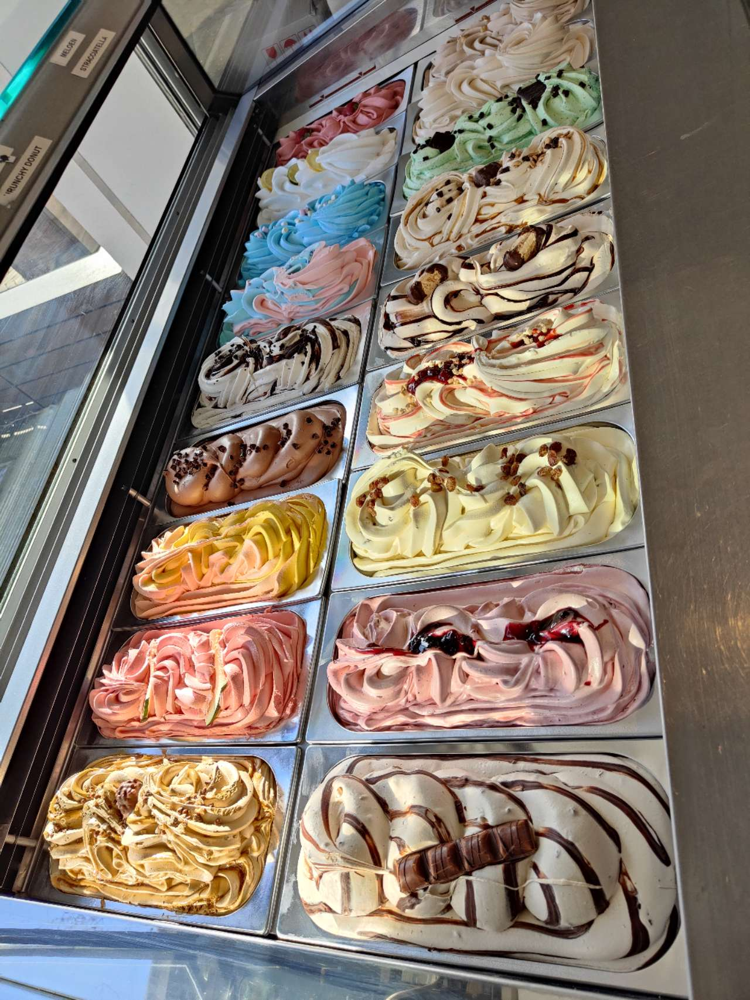

Steen & plank
Van ossenhaas tot varkenshaas, en de Gulle Steen: een royale mixed grill waarmee je verschillende soorten vlees proeft.
Grotestraat 168, Nijverdal
Steen & plank, pannenkoeken, een uitgebreide lunch en ijs. Kom voor een snelle hap, een uitgebreid diner of gewoon een kop koffie: bij Gulle Goedzak ben je altijd welkom.




Van ossenhaas tot varkenshaas, en de Gulle Steen: een royale mixed grill waarmee je verschillende soorten vlees proeft.

Huisgemaakte soep, belegde broodjes, uitsmijters, tosti's en authentieke pannenkoeken. Ook voor afhaal.

Softijs, schepijs, sorbets, sundaes en coupes. En voor bij de koffie: bubble tea en ijskoffie.
Happen van plank: vanaf 2 personen te bestellen, geserveerd met patat mayo en rauwkostsalade. Gebakken aardappeltjes in plaats van patat + € 1,95, gewokte groenten in plaats van rauwkostsalade + € 1,95.
Gerookte zalmsalade, uienringen met knoflooksaus, schnitzel Gulle Goedzak en kipsaté met satésaus
Uienringen met knoflooksaus, spareribs, nacho's met cheddarkaas en 4 kipsaté met satésaus
Wokpannetje biefstukpuntjes, serranoham met meloen, spareribs en gamba's met knoflooksaus
Zalmfilet, wokpannetje gamba's, calamarisringen met knoflooksaus en nacho's met cheddarkaas
Carpaccio, kipsaté met satésaus, stokbrood en wokpannetje biefstukpuntjes
Kogelbiefstuk en varkenshaas met saus, uienringen met knoflooksaus en nacho's met cheddarkaas
Onbeperkt genieten, 2,5 uur lang. Uitsluitend per tafel te bestellen.
€ 38,95 p.p. exclusief drinken
kinderen € 3,00 per leeftijdsjaar (3 tot 11 jaar)
€ 49,95 p.p. inclusief drinken (alle frisdranken, bier van de tap en wijn)
kinderen € 4,00 per leeftijdsjaar (3 tot 11 jaar)
Alles van onze kaarten, van lunch tot dessert. Gerechten met het label nieuw staan dit jaar voor het eerst op de kaart.
Alle hoofdgerechten worden geserveerd met rauwkostsalade en patat mayo. Gebakken aardappeltjes in plaats van patat + € 1,95, gewokte groenten in plaats van rauwkostsalade + € 1,95. De keuken sluit een half uur voor sluitingstijd.
met brood en kruidenboter
met brood en kruidenboter
met brood en kruidenboter
met cheddarkaas en guacamole
met kruidenboter en knoflooksaus
gemengde sla, zongedroogde tomaten, pijnboompitten, ui, olijven, Parmezaanse kaas en truffelmayonaise
dun gesneden beef, rucola, sesamzaad en huisgemaakte teriyakisaus
gemengde sla, gerookte zalm, cherrytomaatjes, komkommer, rode ui en honing-mosterddressing
gemengde sla, cherrytomaatjes, komkommer, rode ui en huisgemaakte cocktailsaus
sla, serranoham, zongedroogde tomaten, chorizokroketjes, gefrituurde uienringen en brood met kruidenboter
sla, gerookte zalm, gamba's met chilisaus, gefrituurde garnalen en brood met kruidenboter
keuze uit champignonroomsaus of pepersaus
keuze uit huisgemaakte teriyakisaus of pepersaus
keuze uit huisgemaakte teriyakisaus of pepersaus
vers gebakken en heerlijk gekruid, met vissaus
met roerbakgroenten en chilisaus
met roerbakgroenten, cashewnoten en huisgemaakte teriyakisaus
met roerbakgroenten, sesamzaad en huisgemaakte teriyakisaus
4 stokken kipsaté met satésaus en gebakken uitjes
met sla, tomaten, komkommer, cheddarkaas en smokey BBQ honey
keuze uit zoet, pikant of smokey marinade
keuze uit zoet, pikant of smokey marinade
Een royale mix grill waarmee je verschillende soorten vlees proeft.
varkenshaas en schnitzel met champignonroomsaus en kipsaté met satésaus
biefstuk met pepersaus, kipsaté met satésaus en spareribs
Keuze uit varkens- of kipschnitzel, geserveerd met patat mayo en rauwkostsalade.
met gebakken champignons, spek en ui (extra warme saus + € 1,50)
met gebakken champignons, spek en ui (extra warme saus + € 1,50)
Geserveerd met brood en kruidenboter (patat in plaats van brood + € 2,50).
mesclun mix en kaas met groenten
gemengde sla, rauwkostsalade, paprika, ei, gamba's en honing-mosterddressing
gemengde sla, rauwkostsalade, paprika, ananas, krokante kip en honing-mosterddressing
gemengde sla, rauwkostsalade, rode ui, pijnboompitten, zongedroogde tomaten, olijven, rucola, Parmezaanse kaas en truffelmayonaise
gemengde sla, rauwkostsalade, ei, gerookte zalm, cherrytomaatjes, ui, komkommer en honing-mosterddressing
gemengde sla, rauwkostsalade, geitenkaas, komkommer, cherrytomaatjes, walnoten, ei, honing en honing-mosterddressing
gemengde sla, rauwkostsalade, rucola, cherrytomaatjes, sesamzaad, rode ui en dun gesneden gebakken beef met teriyakisaus
met gebakken champignons, spek, ui en kaas
keuze uit kip of garnalen; met champignon, wortel, kaas en champignonroomsaus
Geserveerd met rauwkostsalade en mayo.
Geserveerd met appelmoes, mayo en een kinderijsje.
sla, tomaten, komkommer, mayo en currysaus
keuze uit frikandel, kipnuggets, kroket, bitterballen of kaassoufflé
Keuze uit onze broodjes: baguette wit, moutkorenbol, Italiaanse bol, robuust witbrood of robuust donker. Stokbrood meerprijs + € 1,00.
Geserveerd met een ruime portie brood met kruidenboter.
gemengde sla, pijnboompitten, rode ui, zongedroogde tomaten, olijven, Parmezaanse kaas en truffelmayonaise
gemengde sla, gerookte zalm, tonijnsalade, olijven, zongedroogde tomaten, ui en honing-mosterddressing
ham, kaas, tomaat, komkommer, gekookt ei, rauwkostsalade en honing-mosterddressing
gemengde sla, warme kipstukjes, rode ui en huisgemaakte cocktailsaus
sla, gerookte zalm, tomaat en roomkaas
sla, gekookt ei en huisgemaakte tonijnsalade
gemengde sla, gekookt ei, augurken, krokante kip en huisgemaakte saus
gebakken kip, paprika, ananas, ui en zoete chilisaus, met nacho's met cheddarkaas
3 stokjes kipsaté met satésaus en gebakken uitjes
gesneden gehaktbal met gebakken spek, ui en champignons (met satésaus + € 1,50)
sla, paprika, ui, rundvlees of kipfilet met huisgemaakte teriyakisaus en sesamzaad
warm vlees met satésaus en gebakken uitjes
broodje met twee kroketten
gebakken eieren met spek, ui, champignons en kaas
gebakken eieren met carpaccio, sla, rode ui, pijnboompitten, olijven, zongedroogde tomaten, Parmezaanse kaas en truffelmayonaise
ham, kaas en ananas
kipreepjes, kaas, tomaat, ui en chilisaus
geitenkaas, walnoten en honing
brie, serranoham, rode ui en honing
sla, gerookte zalm, tomaat en roomkaas
gemengde sla, pijnboompitten, rode ui, zongedroogde tomaten, olijven, Parmezaanse kaas en truffelmayonaise
sla, gebakken kipreepjes, komkommer, ui en zoete chilisaus
Met 3 sneetjes boterhambrood.
ham, kaas en ananas
een kopje soep naar keuze, rauwkostsalade, broodje met ham en kaas en broodje met kroket
met gebakken spek, ui, champignons en kaas
Deze menu’s worden geserveerd met salade en patat mayo.
keuze uit varkens- of kipschnitzel
met gebakken spek, ui en champignons (extra warme saus + € 1,50)
rundvlees met sla, komkommer, tomaten, cheddarkaas en smokey BBQ-honing
4 stokken kipsaté met satésaus en gebakken uitjes
keuze uit kip of gamba’s; met champignon, wortel, kaas en champignonroomsaus
Geserveerd met broodje en kruidenboter.
gemengde sla, rauwkostsalade, paprika, rode ui, ei, gamba's en honing-mosterddressing
gemengde sla, rauwkostsalade, paprika, rode ui, ananas, krokante kip en honing-mosterddressing
gemengde sla, rauwkostsalade, rode ui, pijnboompitten, zongedroogde tomaten, olijven, Parmezaanse kaas en truffelmayonaise
gemengde sla, rauwkostsalade, komkommer, ei, ui, tomaten en honing-mosterddressing
gemengde sla, rauwkostsalade, geitenkaas, ei, ui, komkommer, tomaten, walnoten, honing en honing-mosterddressing
gemengde sla, rauwkostsalade, rucola, cherrytomaatjes, sesamzaad, rode ui, dun gesneden beef en huisgemaakte teriyakisaus
Geserveerd met appelmoes, mayo en een kinderijsje.
sla, komkommer, tomaten, mayo en currysaus
keuze uit frikandel, kipnuggets, kroket, bitterballen of kaassoufflé
Van de kaart, met alcoholpercentage.
25 cl of 45 cl
30 cl
30 cl
0,5 liter
33 cl
30 cl
33 cl
8 stuks
12 stuks
8 stuks
12 stuks
8 stuks
12 stuks
12 stuks
10 stuks
met kruidenboter en knoflooksaus
6 stuks
10 stuks
6 stuks
10 stuks
nacho's, kaasblokjes, chorizo, olijven en Italiaanse ham
gefrituurd: 5 garnalen, 5 mini loempia's, 5 uienringen, 5 chorizokroketjes en broodje met kruidenboter
gefrituurd: 6 mini loempia's, 6 uienringen, kaasblokjes, nacho's met cheddarkaas en broodje met kruidenboter
gefrituurd: 5 kaasstengels, 5 bitterballen, kaasblokjes, borrelnootjes en broodje met kruidenboter
Prijzen van frisdrank, koffie en thee staan niet op de online kaart; vraag ze gerust aan de bar.
Pepsi, Pepsi Max, Ice Tea, Ice Tea Green, 7-up, Sinas, Cassis, Spa blauw, Spa rood, Bitter Lemon, Tonic, Rivella, Ginger Ale, Ginger Beer, appelsap, DubbelFris, Fristi, Chocomelk, Ranja, melk, karnemelk en Red Bull.
Koffie, grote koffie, cappuccino, grote cappuccino, espresso, dubbele espresso, koffie verkeerd, latte macchiato, cafeïnevrije koffie, cafeïnevrije cappuccino, cafeïnevrije latte, thee, verse muntthee en verse gemberthee (met citroen of sinaasappel).
smaken: caramel, vanille, chocolade, hazelnoot, kaneel of jasmine green tea
smaken: mango, strawberry, watermeloen of passionfruit
smaken (+ € 0,75): matcha, caramel, vanille, hazelnoot, chocolade of jasmine green tea
Keuze uit vanille, cassis of mix.
kersen, aardbei, chocolade, mango/passie, salted karamel of toffee karamel
stroopwafel karamel, marshmallow Oreo, brownie cookie dough, choco KitKat, salted karamel, aardbei, tropical, rum rozijn of kers
jasmine green tea met poppings: mango, strawberry, passionfruit of watermeloen
natural, matcha, caramel, cannelle, hazelnoot of chocolade
chocolade-ijs, vanille-ijs, chocoladesaus en slagroom
keuze uit softijs of schepijs; vanille-ijs, aardbeiensorbet, aardbeiensaus, vers fruit en slagroom
MonChou kersijs, Bastogne crumble, kersensaus en slagroom
cookie dough-ijs, vanille-ijs, koekjeskruimels, cookie dough-saus en slagroom
keuze uit een gebak, chocolade-ijs, vanille-ijs, gebaksaus en slagroom
vanille bourbon roomijs met chocolade, chocoladesaus en slagroom
roomijs met een swirl van mango-passiesorbet, mangosaus en slagroom
zacht gegaarde vanillecrème, zelf af te branden, met slagroom
mini dame blanche, mini ijsmacaron mango passie, chocoladesaus, mangosaus en slagroom
Dagelijks van 12.00 tot 16.00 uur, duur 2 uur, vanaf 2 personen. Reserveer minimaal een dag van tevoren.
plankje met zoete lekkernijen en kleine hapjes, plankje met tapas en tosti
plankje met zoete lekkernijen en kleine hapjes, plankje met tapas en tosti, plankje met borrelhapjes, of keuze uit ijs van onze ijskaart
Proeverij van 3 speciaalbieren van de tap of 3 glazen wijn.
plankje met tapas en hartige hapjes, plankje met borrelhapjes
plankje met tapas en hartige hapjes, plankje met borrelhapjes, plankje met kipsaté en spareribs
In onze producten kunnen verschillende soorten allergenen aanwezig zijn. Heb je een vraag over de samenstelling van een product? Vraag het een medewerker, we helpen je graag.
De gezelligste tijd van het jaar komt eraan. Vier de feestdagen met familie, vrienden of je geliefde, met een feestelijk onbeperkt menu in een warme kerstsfeer. Reserveer tijdig je tafel.
Reserveer voor kerst

In de zomer zit je op ons terras midden in de levendige drukte van het centrum. Laat de zon op je gezicht schijnen en geniet van een hapje en een drankje in de buitenlucht.
Binnen is het sfeervolle restaurant, waar je in alle rust geniet van je maaltijd. Liever thuis eten? Naast het restaurant hebben we ook afhaal: bel ons even op 0548 546 048.


| Maandag | gesloten |
|---|---|
| Dinsdag | gesloten |
| Woensdag | 11.00 – 20.30 |
| Donderdag | 11.00 – 20.30 |
| Vrijdag | 11.00 – 20.30 |
| Zaterdag | 11.00 – 21.00 |
| Zondag | 12.00 – 20.30 |
De keuken sluit een half uur voor sluitingstijd.